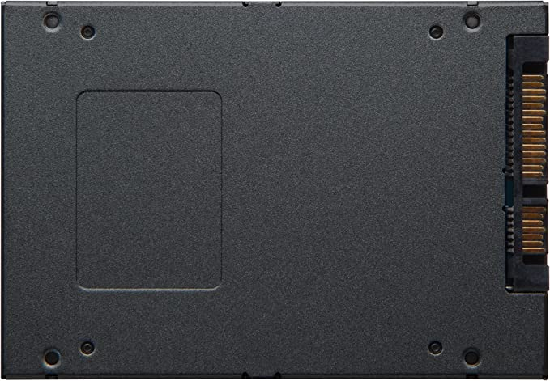
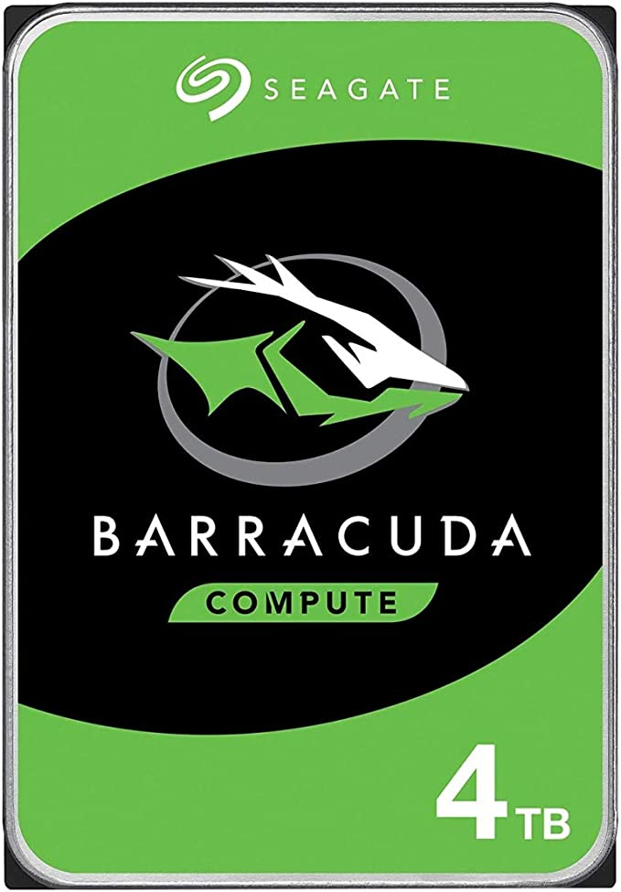
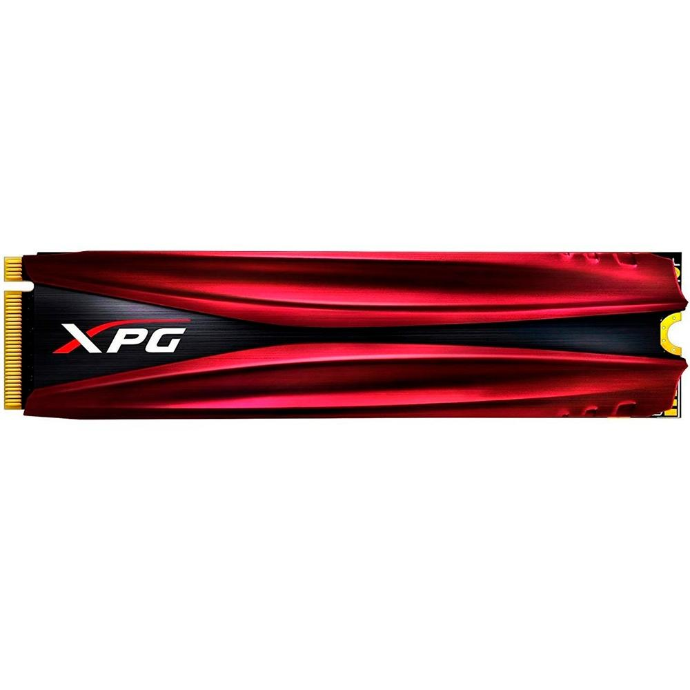

Armazenamento
Uma unidade de disco rígido ou uma unidade de estado sólido retém todos os dados, arquivos, fotos, programas, músicas e vídeos – que o usuário quer guardar.
Qual é a melhor atualmente?
Quem precisa de melhor desempenho e velocidade deve optar por um notebook ou computador de mesa equipado com SSD. Para armazenar arquivos já utilizados e que não precisam ficar à disposição o tempo todo, você pode investir em um HD externo de maior capacidade.
SSD, Kingston, SA400S37/960G
R$429,00
HD Interno, Barracuda Compute HDD 3.5, 4TB, ST4000DM004, Seagate, HD interno
R$699,99
SSD 512 GB Adata XPG Gammix S11 Pro, M.2 NVMe, Leitura: 3500MB/s e Gravação: 2300MB/s - AGAMMIXS11P-512GT-C
